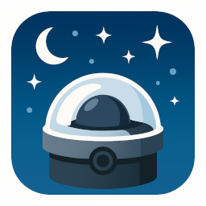

Allsky360 Calibration
Dashboard
Archive
Videos
Graphs
Weather
Aurora
Config
Calibration
Processing
Next update in
10
s
Black Mask
Mask radius (px):
Center X (px):
Center Y (px):
Show mask
Azimuthal Grid
Horizon radius (px):
Zenith X (px):
Zenith Y (px):
North direction (°):
Show grid
Show cardinal directions
Equatorial Grid
Show grid
Projection type:
Linear
Sinus
Config
Put the following values into your config.ini